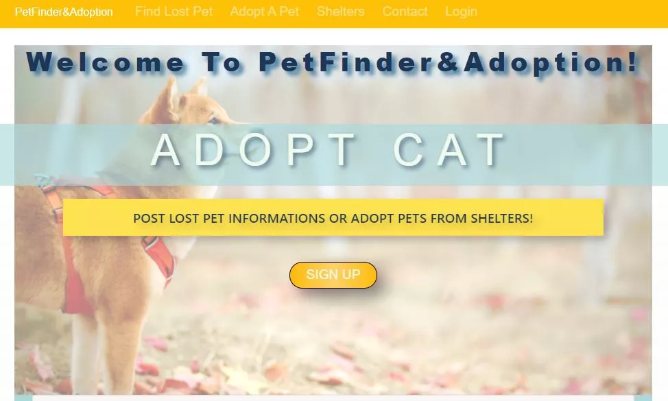
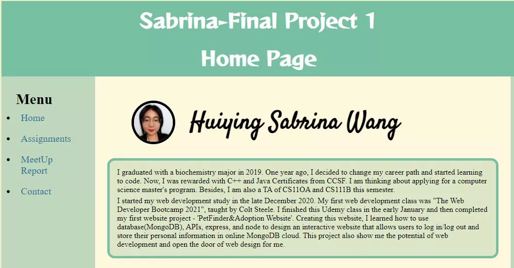
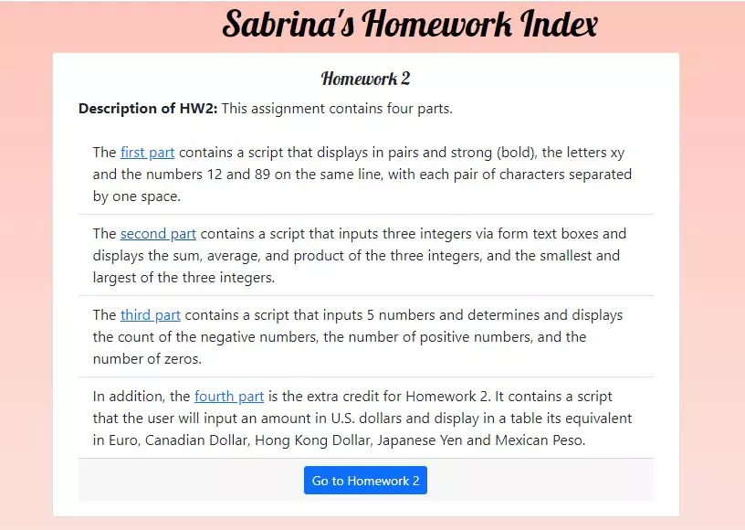

I started my web development study in the late December 2020. My first web development class was "The Web Developer Bootcamp 2021", taught by Colt Steele. I finished this Udemy class in the early January and then completed my first website project -'PetFinder&Adoption Website'. Creating this website, I learned how to use database(MongoDB), APIs, express, and node to design an interactive website that allows users to log in/log out and store their personal information in online MongoDB cloud. This project also show me the potential of web development and open the door of web design for me.
Huiying Sabrina Wang
I want to be a Software Engineer.
The greatest glory in living lies not in never falling, but in rising every time we fall.
Education
I graduated with a biochemistry major from University of California at Davis in 2019.
Later, I decided to change my career path and started learning to code. One year later, I was rewarded with C++ and Java Certificates from CCSF and worked as a TA of CS110A and CS111B this semester.
Now, I am continuing my study in computer science in Master of Computer Science Program in Arizona State University.
My Website Project


I took CNIT 132 Intermediate HTML and CSS in the Spring Semester and created a project that shows my HTML and CSS coding skills and tips.

I took CNIT 133 JavaScript, jQuery, AJAX in the Spring Semester and created a project that present my JavaScript coding skills
My Hobbies
- Reading Fictions
- Cooking
- Coding
- Hiking
- Learning new skills
My Classes
- CNIT 133 JavaScript, jQuery, AJAX
- CNIT 132 Intermediate HTML and CSS
- CS 110A Introduction to programming (Python)
- CS 110B C++ Programming
- CS 110C C++ Data Structure and Algorithm
- CS 111B Java Programming
- CS 111C Java Data Structure and Algorithm